Resumen
OpenStack-DI es el servicio de Infraestructura como servicio (IaaS) del Departamento de Informática de la Universidad de Almería. Actualmente ofrece servicios de máquinas virtuales y almacenamiento de volúmenes.
OpenStack-DI además, es el soporte para el resto de servicios cloud del Departamento (Cloud-DI), como son servidores virtuales para almacenamiento de archivos, gestión de proyectos, control de versiones, automatización de tareas y autenticación de usuarios.
-
Ofrecer Infraestructura como servicio de apoyo a docencia e investigación.
1. Servicios que ofrece OpenStack-DI
OpenStack-DI es el proyecto de Cloud-DI que ofrece Infraestructura como servicio. Pese a ser el proyecto de base sobre el que se sustenta el cloud del Departamento de Informática, lo consideramos como un componente más.
Actualmente, OpenStack-DI ofrece:
-
Servicios para la creación de Máquinas y laboratorios virtuales.
-
Servicios de Almacenamiento para la creación de volúmenes.
2. Servicios que ofrece Cloud-DI
Algunos de los servidores del Departamento de Informática, como los de control de versiones y gestión de proyectos, son realmente máquinas virtuales creadas dentro de OpenStack-DI.
-
Almacenamiento de archivos (owncloud.di.ual.es). Actúa como un Dropbox privado.
-
Gestión de proyectos/peticiones (redmine.di.ual.es)
-
Control de versiones Git (gitlabdoc.ual.es)
-
Control de versiones Subversion (svndoc.ual.es)
-
Automatización de tareas (jenkins.di.ual.es)
-
Moodle (moodle.di.ual.es)
-
Autenticación de usuarios (ldap.di.ual.es)
3. Infraestructura de OpenStack-DI
4. Acceso a Cloud-DI
Todos los recursos de Cloud-DI, ya sean de OpenStack-DI, o servidores de apoyo a docencia de Cloud-DI, sólo son accesibles desde la red de la UAL.
|
Para el acceso a los recursos de Cloud-DI desde fuera de la UAL será necesario usar una conexión VPN. Consulta vpn.ual.es para configurar tu acceso a la VPN de la UAL. |
5. Primeros pasos en OpenStack-DI
Para utilizar OpenStack-DI es necesario disponer de una cuenta de usuario. El acceso sólo está permitido desde la red de la UAL. El acceso desde fuera de la UAL se realizará mediante VPN.
5.1. Solicitud de cuenta de usuario
-
Solicita a clouddi@ual.es tu acceso a OpenStack-DI. Te proporcionarán un dominio, un login y un password de acceso.
-
Introduce tus credenciales en openstack.di.ual.es. Una vez dentro del sistema tendrás acceso a un proyecto OpenStack.
Un proyecto OpenStack es un conjunto de recursos disponible para uno o más usuarios. Ejemplos de recursos básicos son los núcleos de procesador (VCPU), RAM o espacio de almacenamiento.
De forma predeterminada cada usuario tiene un proyecto. No obstante, un mismo usuario puede ser miembro de más de un proyecto (p.e. Laboratorio ARSO, TIC-211, Laboratorio Sistemas de Información)
5.2. Cambio de la contraseña
Para cambiar la clave proporcionada despliega el menú de las opciones del usuario conectado situado en la parte superior derecha y selecciona Settings.
Se desplegará un menú en la izquierda. A continuación, selecciona Change password.
5.3. Registra tus claves SSH
Para el acceso SSH a máquinas virtuales Linux es necesario registrar la clave SSH pública en la cuenta de usuario OpenStack. Las clave pública SSH será inyectada a las instancias creadas en el proceso de inicialización.
-
Inicia sesión en OpenStack-DI (openstack.di.ual.es).
-
En el menú de la izquierda selecciona
Project | Compute | Key Pairs -
Si dispones de una clave SSH, pulsa el botón
Import Key Pair. En el formulario, introduce enKey Pair Nameel nombre que quieres asignar a tu clave pública en OpenStack y pega tu clave pública en el cuadro de textoPublic Key.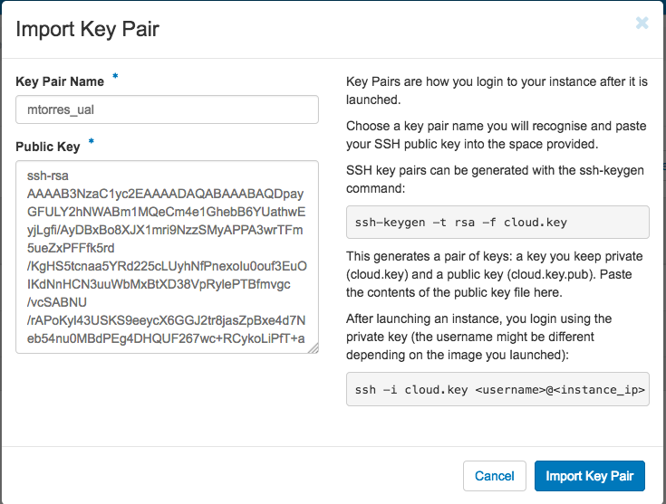En el mismo formulario de importación de claves SSH aparecen los pasos a seguir en sistemas Linux o Mac para crear tu clave SSH. También puedes usar esos comandos en sistemas Windows si tienes instalado un emulador BASH como Git Bash
Instala Git for Windows en tu sistema Windows. Este software, además de instalar Git para control de versiones, instalará Git BASH en tu sistema, un emulador BASH que te será muy útil para la conexión SSH a máquinas virtuales Linux desde tu sistema Windows.
-
Si no dispones de una clave SSH o bien no quieres o no puedes generarla, OpenStack puede crear tu par de claves. Para crear tu par de claves desde OpenStack pulsa el botón
Create Key Pair. Introduce en el formulario el nombre que quieras a dar a tu clave SSH.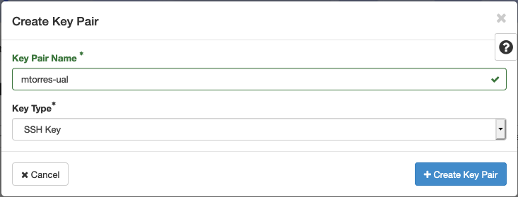A continuación, pulsa el botón
Create Key Pair. Descarga la clave generada.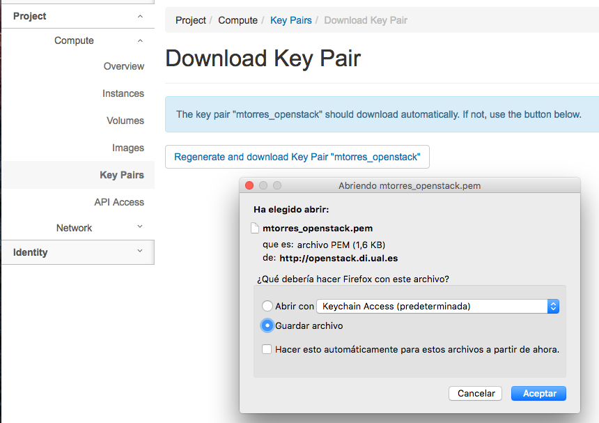
5.4. Configuración de las Reglas de seguridad
En OpenStack, cada proyecto tiene sus propias reglas de seguridad, y funcionan a modo de cortafuegos sobre las instancias definidas en el proyecto.
De forma predeterminada, las instancias creadas no se pueden comunicar con el exterior. Configura las reglas de seguridad (p.e. abriendo los puertos SSH, RDP para escritorio remoto de Windows, HTTP para servidores web, …) de tu proyecto para que se pueda acceder de forma adecuada a las instancias.
La configuración básica de las reglas de seguridad se puede realizar en el menú Project | Network | Security Groups. Desde ahí podrás configurar las reglas predeterminadas (default) para todas las máquinas virtuales de un proyecto o crear nuevos grupos de seguridad con reglas específicas.
Pulsando el botón Manage Rules accedemos a las reglas de seguridad predeterminadas (default) de este proyecto. Por tanto, las máquinas virtuales creadas en este proyecto a las que se apliquen las reglas de seguridad default tendrían abierta la comunicación de acuerdo con las reglas indicadas en el grupo de seguridad.
|
De forma predeterminada, el grupo de seguridad |
Pulsa el botón Add Rule para añadir reglas de seguridad. En el formulario selecciona la regla de seguridad aplicable a las instancias.
|
Reglas se seguridad básicas:
|
|
El STIC sólo tiene abiertos en la red Cloud-DI los puertos 80 (HHTP), 22 (SSH) y 3389 (RDP) para la conexión VPN. No podrás establecer conexiones a otros puertos desde fuera de la UAL aunque estés usando la conexión VPN. |
5.5. Creación de una máquina virtual
Puedes crear una máquina virtual seleccionando Project | Compute | Instances y pulsando el botón Launch instance.

En el asistente deberás proporcionar:
-
Paso 1: Nombre de la instancia y cantidad de instancias a crear. La zona de disponibilidad siempre es
nova. El formulario también muestra el total de instancias (máquinas virtuales) creadas y disponibles.
-
Paso 2: En la fuente, selecciona
ImageoImage snapshotdependiendo de si quieres crear una instancia a partir de una imagen limpia o de un snapshot, respectivamente. La selección de la imagen base para la instancia se realizará a partir del cuadro inferior, el cual se podrá filtrar introduciendo en el cuadro de búsqueda alguno de los caracteres del nombre de la imagen.
|
Las imágenes de Windows y de XUbuntu están disponibles como Image snapshot, no como Image. |
|
Desactiva la creación de un nuevo volumen asociado a la instancia.
Si más adelante necesitas crear uno o más volúmenes para tu instancia, podrás crearlos desde el menú de volúmenes ( |
-
Paso 3. Sabor de las instancias creadas. OpenStack denomina sabor a un conjunto de propiedades que representan las características hardware de las instancias a crear (número de cores, RAM, espacio de disco). Selecciona un sabor adecuado para la instancia a crear.
|
Una señal de advertencia puede estar indicando un sabor demasiado pequeño para la instancia a crear o una superación de la cuota de los recursos del proyecto. |
-
Paso 4. Red a la que conectar la instancia creada. Seleccionar entre las redes disponibles la red a la que conectar la máquina virtual. Normalmente, conectaremos la instancia en la red del proyecto, aunque es posible conectarla a cualquier otra red que tengamos creada.
-
Paso 5. Selección de grupos de seguridad. Los grupos seleccionados estableceran los puertos y el tipo de comunicación permitida con la instancia creada. Selecciona todos los grupos de seguridad aplicables a la instancia creada.
-
Paso 6. Selección de la clave pública. Para instancias Linux deberemos seleccionar la clave pública a inyectar a la instancia creada. Dicha clave será la que se emparejará con nuestra clave privada local en el momento de la conexión SSH.
Pulsar el botón Launch Instance para proceder a la creación de la instancia. Tras unos instantes la instancia estará creada y disponible para su uso.
|
En máquinas Windows no es necesario inyectar la clave pública. |
5.6. Asignación de IP flotante
Las instancias creadas son conectadas a una de las redes privadas de un proyecto OpensStack. Inicialmente, es posible la comunicación entre las instancias de dicha red. Pero de forma predeterminada, no es posible la conexión a la instancia creada desde nuestro equipo de trabajo, o en general, desde otro equipo que esté fuera de la red del proyecto en el que se ha creado la máquina virtual.
Podemos ver la instancia creada y conectada a la red del proyecto en el menú Project | Network | Network Topology.
Las IPs flotantes son la base para la comunicación con la instancia desde fuera de la red donde fue creada. Nuestro proyecto tiene una cuota de IPs flotantes y deberemos gestionarlas de forma eficiente.
Para asignar una IP flotante a una instancia, mostrar en primer lugar la lista de instancias (Project | Compute | Instances). A continuación, seleccionar Associate Floating IP en el menú desplegable de la instancia.
En el formulario, pulsar el botón + para pedir una IP flotante.

El formulario siguiente muestra la red que propocionará las IPs flotantes (ext-net), que es la red que el STIC proporciona a Cloud-DI. En este formulario pulsaremos el botón Allocate IP.
|
El STIC tiene reservada la red 192.168.64.0/21 para Cloud-DI. Cloud-DI Team ha reservado un pequeño conjunto de estas IPs para la gestión del propio cloud, quedando como pool de direcciones IPs disponibles desde 192.168.64.21 hasta 192.168.71.255, lo que supone más de 2000 direcciones IP para máquinas virtuales. |
De vuelta al formulario, se mostrará la IP flotante asignada de la red ext-net. Pulsar el botón Associate.
Ahora la instancia aparecerá con la IP flotante asignada, la cual podremos usar para conectarnos a ella desde fuera de la red privada de OpenStack en la que se creó.
5.7. Conexión a la máquina virtual
Una vez creada la máquina virtual y asignada una IP flotante en el caso de que queramos conectarnos a ella desde una red diferente a la que fue creada, usaremos un cliente para conectarnos a ella usando un cliente.
| Sistema operativo | Uso | Cliente recomendado |
|---|---|---|
Linux |
Terminal |
Terminal |
Linux con Interfaz gráfica |
||
Máquina Windows |
||
Mac |
Terminal |
Terminal |
Linux con Interfaz gráfica |
||
Máquina Windows |
||
Windows |
Terminal |
Git BASH, Putty |
Linux Interfaz gráfica |
||
Máquina Windows |
Cliente de escritorio remoto |
6. Imágenes disponibles en OpenStack-DI
Actualmente están disponibles las imágenes siguientes en OpenStack-DI:
| Image | Login | Modo de acceso |
|---|---|---|
Ubuntu 16.04 LTS |
ubuntu |
Key Pair |
CentOS 6 |
centos |
Key Pair |
cirros |
cirros |
Key Pair |
Xubuntu 16.04 LTS |
clouduser |
Contraseña |
Windows Server 2012 |
Administrator |
Contraseña |
|
Contacta con clouddi@ual.es para obtener la contraseña para instancias en las que el modo de acceso no sea con Key Pair. |
7. Uso de volúmenes en OpenStack-DI
OpenStack ofrece un servicio de almacenamiento de bloques, lo que nos permite poder crear volúmenes y conectarlos a máquinas virtuales. Los volúmenes nos dan almacenamiento persistente, entendido como que el volumen se conserva a pesar de que se elimine la máquina virtual a la que está conectado.
7.1. Creación de un volumen
-
Inicia sesión en OpenStack-DI.
-
Selecciona el proyecto en el que crear el volumen.
-
En el menú de la izquierda selecciona
Project | Compute | Volumes. -
En la pestaña
Volumespulsa el botónCreate Volume.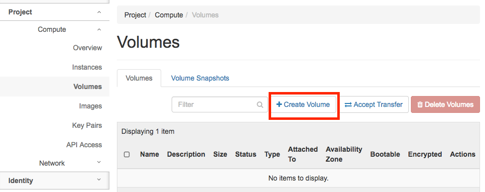 -
En el formulario introduce los valores para el nombre del volumen y el tamaño.
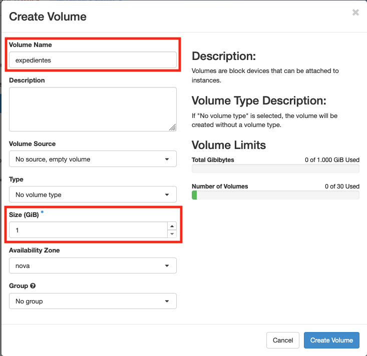 -
Pulsa el botón
Create Volume.
Tras unos instantes el volumen aparecerá en la lista de volúmenes creados y disponible para ser conectado a una instancia.
7.2. Conexión de un volumen a una instancia
Una vez creado un volumen, éste puede ser conectado a una instancia.
|
Un volumen sólo puede estar conectado a una instancia. Para conectarlo a otra instancia, el volumen tendrá que ser desconectado previamente. |
-
Inicia sesión en OpenStack-DI.
-
Selecciona el proyecto en el que crear el volumen.
-
En el menú de la izquierda selecciona
Project | Compute | Volumes. -
En la pestaña
Volumesselecciona el volumen que quieras conectar a una instancia, despliega el listbox deActionsy seleccionaManage Attachments.
-
Selecciona en el formulario la instancia a la que conectar el volumen.
Tras unos instantes el volumen aparecerá conectado a la instancia indicando que está en uso y el dispositivo en el que está disponible.
A continuación sigue los pasos del sistema operativo en el que se haya conectado el volumen para inicializarlo (crear tabla de particiones, formatear, montar, …)
7.3. Transferir un volumen a otro proyecto
Un volumen sólo se puede utilizar en el proyecto al que pertence, pudiendo intercambiarse entre las distintas máquinas virtuales del proyecto. Sin embargo, hay situaciones en las que estamos interesados en usar un volumen en una instancia que tenemos en otro proyecto, o transferir el volumen a otro usuario de OpenStack-DI. Esta operación es la que se conoce como Transferir un volumen en OpenStack.
-
Inicia sesión en OpenStack-DI.
-
Selecciona el proyecto en el que crear el volumen.
-
En el menú de la izquierda selecciona
Project | Compute | Volumes. -
En la pestaña
Volumesselecciona el volumen que quieras transferir, despliega el listbox deActionsy seleccionaCreate Transfer.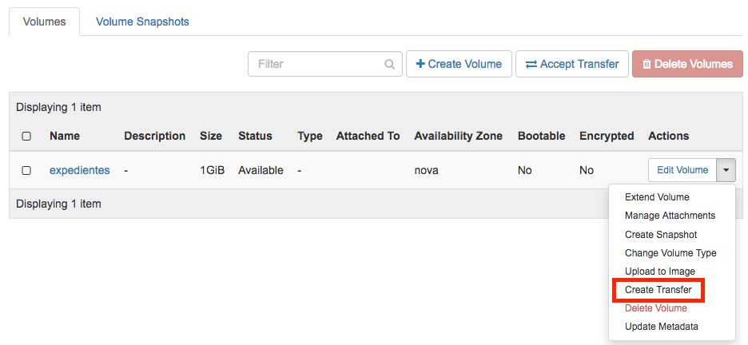 -
Introduce un nombre significativo de la transferencia para que pueda ser identificado claramente por otras personas en el caso de que se vaya a transferir el volumen a otro usuario OpenStack.
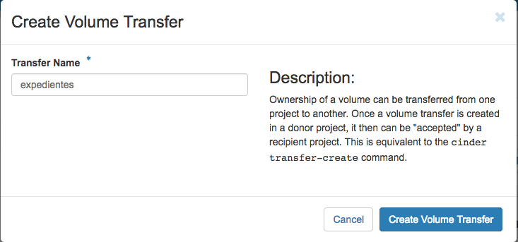 -
Pulsa el botón
Create Volume Transfer. Como resultado se nos mostrará un ID de transferencia y una clave de autorización que debemos conservar para poder completar el proceso de transferencia del volumen.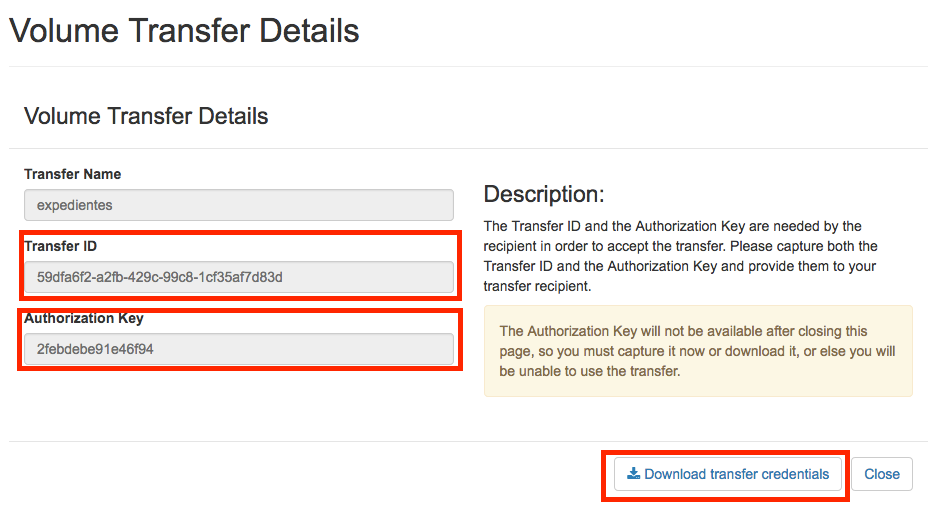 -
Descargar el arvhivo con los datos de la transferencia pulsando el botón
Download transfer credentials. El volumen quedará pendiente de que se complete el proceso aceptando la transferencia.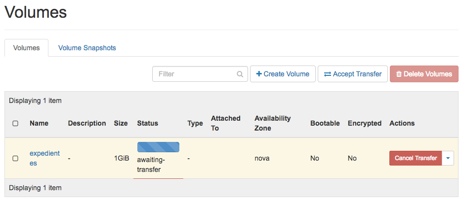 -
En el proyecto de destino de la transferencia pulsar el botón
Accept Transfer. -
Introducir en el formulario los valores de ID de transferencia y Clave de autorización que descargamos en el archivo de credenciales de la transferencia
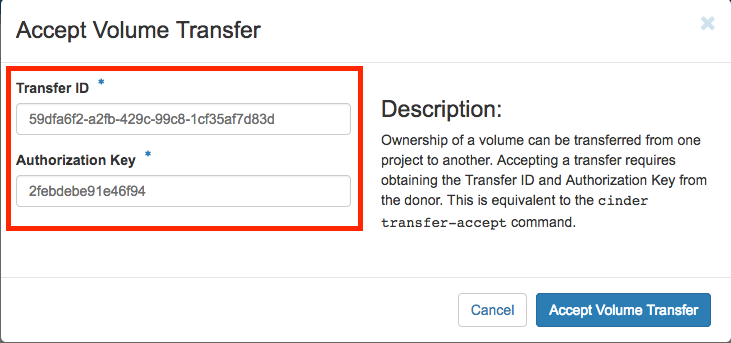 -
Pulsar el botón
Accept Volume Transfer. El volumen aparecerá transferido en la lista de volúmenes disponibles del proyecto de destino.
8. Aprovisionamiento de una instancia durante la creación
Al crear una instancia en OpenStack-DI es posible aprovisionarla (configurarla) durante su proceso de creación. De esta forma, nuestras instancias ya tendrán instalados y configurados los paquetes necesarios.
La configuración de una instancia se realiza en el paso de Configuration del asistente. Básicamente, hay que incluir un sript bash en el cuadro de texto Customization Script tal y como muestra la figura siguiente.
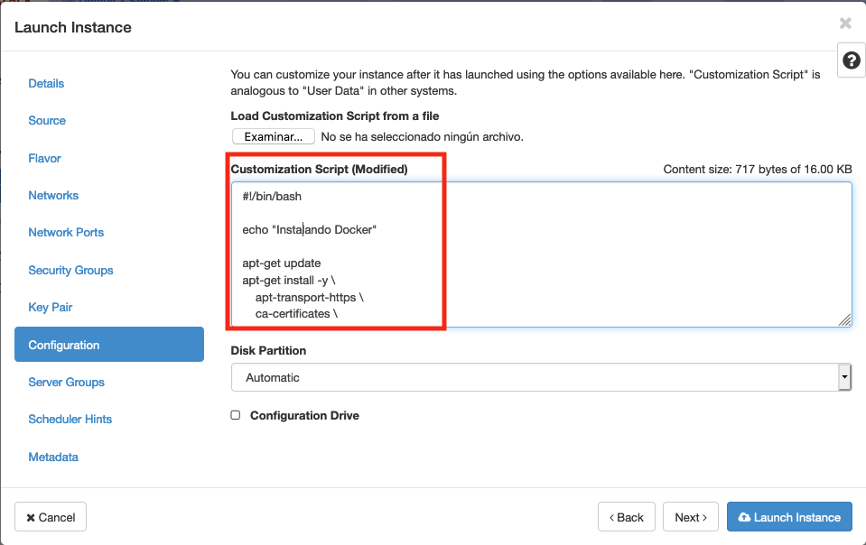
A continuacion, se muestra el script de configuración de Docker CE en una instancia Ubuntu durante su creación.
#!/bin/bash
echo "Instalando Docker"
apt-get update
apt-get install -y \
apt-transport-https \
ca-certificates \
curl \
software-properties-common
curl -fsSL https://download.docker.com/linux/ubuntu/gpg | apt-key add -
apt-key fingerprint 0EBFCD88
add-apt-repository \
"deb [arch=amd64] https://download.docker.com/linux/ubuntu \
$(lsb_release -cs) \
stable"
apt-get update
apt-get install -y docker-ce
groupadd docker
usermod -aG docker ubuntu
systemctl enable docker
echo "Instalando Docker Compose"
curl -L "https://github.com/docker/compose/releases/download/1.23.1/docker-compose-$(uname -s)-$(uname -m)" -o /usr/local/bin/docker-compose
chmod +x /usr/local/bin/docker-compose
exit 09. Próximamente
Actualmente tenemos en fase de prueba y listos para pasar a producción los siguientes componentes de OpenStack:
-
Orquestación de recursos OpenStack
-
Balancedor como servicio (LBaaS)
-
Almacenamiento de objetos
-
Almacenamiento compartido de archivos
-
Servicio de telemetría y alarma
-
Contenedores como servicio (CaaS)
-
Framework de procesamiento Big Data